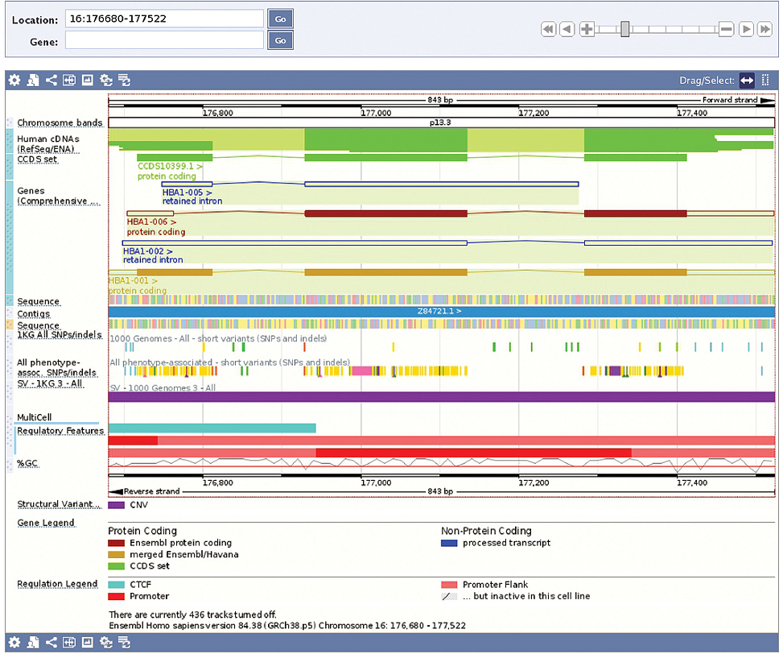

Part A · The biological system · Page 2 of 13
DNA: the molecule, its strands, and its coordinates
Genetic data files label every measured position with an address such as chr12:111803962:G:A. This page explains what sits at that address—two paired strands of DNA—and the conventions that turn the molecule into data: sequences written 5′→3′, a reference genome that numbers one strand, genome builds, and the strand mix-ups that appear when you combine datasets.
Two complementary strands, one coordinate system
A DNA molecule is two paired strands. Each strand is a sequence of bases, read from its 5′ end to its 3′ end; the strands pair A with T and C with G and run in opposite directions, so each strand is the reverse complement of the other. A reference genome numbers the bases of one strand (the + strand) of each chromosome, so every base pair has an address: (genome build, chromosome, position).
- Sequence as data. One strand is a string over {A, C, G, T}; the pairing rule fixes the other strand completely.
- Direction. Strands run 5′→3′ in opposite directions. Written 5′→3′, the partner strand is the reverse complement.
- Coordinates. Positions are 1-based integers counted along the + strand of one genome build. GRCh37 and GRCh38 give the same base different numbers (rs671: 112,241,766 vs 111,803,962).
- Strand in SNP data. One SNP can be written C/T or G/A depending on the strand; A/T and C/G SNPs look identical from both strands. Always record the build and the strand.
- In the data matrix. Each column of the genotype matrix is labeled by such an address. Swapping which allele is counted, or reading an A/T or C/G SNP's alleles on the wrong strand, silently turns 0 into 2 (and 2 into 0).
Nucleotides: the units of DNA Core
DNA (deoxyribonucleic acid) is a long chain molecule built from repeating units called nucleotides. Each nucleotide has three parts (figure below)4:
- a sugar, deoxyribose, whose five carbon atoms are numbered 1′ to 5′ (read “one-prime” to “five-prime”; the prime mark distinguishes the sugar's carbons from the numbered atoms of the base);
- a phosphate group, attached to the sugar's 5′ carbon;
- a base, attached to the sugar's 1′ carbon. There are four bases: adenine (A), cytosine (C), guanine (G) and thymine (T).
Nucleotides join into a strand: a phosphate links the 3′ carbon of one sugar to the 5′ carbon of the next. The alternating sugars and phosphates form the sugar–phosphate backbone, and the bases stick out from it. Because every link runs from a 3′ carbon to a 5′ carbon, the two ends of a strand differ: the 5′ end has a free phosphate on a 5′ carbon, and the 3′ end has a free hydroxyl group (–OH) on a 3′ carbon.
On a small screen, scroll sideways inside a figure to see all of it.
The backbone is the same everywhere; only the order of bases varies. So the information in a strand is its base order, and we record it as a string over the alphabet {A, C, G, T}, written from the 5′ end on the left to the 3′ end on the right: 5′-ACG-3′, or simply ACG. Such a string is a DNA sequence. Data files add a few symbols: N for an unknown base, and in some reference files lowercase letters that mark repeated sequence (“soft-masking”)23.
Base pairing and the double helix Core
In cells, DNA is double-stranded. The two strands are held together by hydrogen bonds—weak attractions between atoms of facing bases—and the pairing follows a strict rule: A pairs with T through two hydrogen bonds, and C pairs with G through three4. Each such pair is a base pair (bp), and the base pair is the unit of length for DNA.
Why only these pairs? A and G are purines, larger bases with two rings; C and T are pyrimidines, smaller bases with one ring4. Each allowed pair joins one purine with one pyrimidine, so every base pair spans the same width, and only these combinations line up their hydrogen bonds.
Because of the rule, the two strands are complementary: given one strand, the other is fully determined. A double-stranded molecule therefore carries the same information twice, once on each strand.
The two strands wind around a common axis to form a right-handed double helix. In its usual form in cells (B-DNA), the helix is about 2 nm wide, neighboring base pairs are stacked 0.34 nm apart, and one full turn takes about 10.5 base pairs (≈ 3.6 nm)1–4. (The 1953 fiber model had exactly 10 base pairs per turn; measurements in solution give 10.4–10.62,3.) At 0.34 nm per base pair, the roughly 3.1 billion base pairs of one copy of the genome7 would stretch about 1 m, and the two copies in a cell about 2 m—the previous page shows how this fits into a nucleus.
Each hydrogen bond is weak, so the strands can be separated, for example by heating, and a single strand pairs again with any strand whose sequence is complementary to it. Many laboratory methods use this. A genotyping array, for instance, carries short single-stranded probes that bind only DNA with the complementary sequence (samples page).
DNA replication copies a molecule before a cell divides. The two strands separate, and each serves as a template4. An enzyme (a protein that speeds up a chemical reaction) called DNA polymerase adds nucleotides one at a time, choosing each base by the pairing rule. It can extend a new strand only at its 3′ end, so new DNA always grows 5′→3′4. The result is two double helices, each made of one original strand and one new strand (figure below). Copying is very accurate, and most errors are corrected at once. An error that escapes correction becomes a permanent change in the sequence, a mutation4. Mutations are the source of the genetic variation described on the variation page.
Direction: 5′ and 3′ ends, antiparallel strands, and the reverse complement Core
Every strand has a direction, from its 5′ end to its 3′ end. In a double helix the two strands run in opposite directions: they are antiparallel4. If one strand runs 5′→3′ from left to right, its partner runs 5′→3′ from right to left.
By convention, every sequence is written 5′→3′. To write the partner strand you therefore do two things: replace each base by its pairing partner (the complement: A↔T, C↔G), and reverse the order. The result is the reverse complement. As a formula, for a sequence \(s = s_1 s_2 \ldots s_n\):
- \(s\)
- A DNA sequence: the bases (A, C, G, T) of one strand, written 5′→3′.
- \(s_i\)
- The base at position \(i\) of \(s\), counted from the 5′ end: \(s_1\) is the base at the 5′ end and \(s_n\) the base at the 3′ end.
- \(n\)
- Length of \(s\) in bases; \(i\) runs from 1 to \(n\).
- \(\operatorname{comp}\)
- Complement of one base, the base it pairs with: A to T, T to A, C to G and G to C.
- \(\operatorname{rc}(s)\)
- Reverse complement of \(s\): the partner strand, also \(n\) bases long and also written 5′→3′. \(\operatorname{rc}(s)_i\) is its base at position \(i\).
As \(i\) counts up from 1 to \(n\), the index \(n + 1 - i\) counts down from \(n\) to 1, so the reverse complement reads \(s\) from its 3′ end and complements each base on the way. In the figure below \(n = 7\): position 1 of CTCAGGT is C, the complement of G, the last base of ACCTGAG. This is the antiparallel pairing written as a rule: the 5′ end of the partner strand pairs with the 3′ end of \(s\). When \(n\) is odd, the middle base, at \(i = (n + 1)/2\), keeps its position and is only complemented. Applying \(\operatorname{rc}\) twice reverses the order twice and complements every base twice. The index returns to \(n + 1 - (n + 1 - i) = i\), and the complement of a complement is the original base, so \(\operatorname{rc}(\operatorname{rc}(s))_i = s_i\) at every position: the partner of the partner strand is the original strand.
Some sequences equal their own reverse complement: GAATTC complements to CTTAAG, which reversed is GAATTC again. Such sequences are called palindromic: both strands read the same 5′→3′. In the terms of the formula above, \(s_i = \operatorname{comp}(s_{n+1-i})\) at every position, so \(n\) is even: a middle base would have to be its own complement, and no base is. Do not confuse this with a “palindromic SNP” (later on this page), which is a SNP whose two alleles are complements of each other.
Which strand is “the” sequence? Biologically, neither strand is special. A gene—a stretch of DNA that the cell copies into RNA, often to make a protein (next page)—lies on one strand or the other, and genes are found on both strands. For data, a convention picks one strand per chromosome: the + strand of the reference genome (next sections).
The reference genome and genome builds Core
To compare people, everyone's DNA is described relative to one agreed sequence per chromosome: the reference genome. The human reference is haploid: one sequence for each of chromosomes 1–22, X and Y, plus the mitochondrial genome, with extra pieces for some highly variable regions5. It was assembled from the DNA of several anonymous donors; about 70% of the current version comes from one of them5,6.
The reference is a coordinate system, not a “normal” or “healthy” genome. At about two million positions, the reference carries the less common of two alleles6 (an allele is one of the possible bases at a position that varies between people; variation page). A “reference allele” is simply the base found in the reference sequence.
The reference is improved over time, and each released version is a genome build (also called an assembly). A new build can fill gaps and fix errors, which changes the sequence and therefore the position numbers of everything downstream. Three builds matter for you:
| Build | Other name | Released | What to know |
|---|---|---|---|
| GRCh37 | hg19 | February 20097 | Coordinates of UK Biobank array genotypes and of its original imputed genotypes17; many older GWAS results. |
| GRCh38 | hg38 | December 2013; latest patch GRCh38.p14, 20225,7 | The current standard reference. Patch releases add sequence without changing chromosome coordinates5. Used for UK Biobank exome and genome sequencing17–19. |
| T2T-CHM13 | hs1 (UCSC) | 20228 | The first complete, gapless sequence: about 3.055 billion bp for all chromosomes except Y, adding nearly 200 million bp missing from earlier builds8. Version 2.0 adds a complete Y9. Not yet the standard for most databases23. |
Builds give the same base different numbers. The variant rs671 sits at chr12:112,241,766 on GRCh37 and at chr12:111,803,962 on GRCh38: 437,804 bp apart, although the base and its neighbors are identical (figure below)10. Its rsID, rs671, is the same on both builds; positions are not.
Liftover converts coordinates from one build to another, using a “chain file” that lists which blocks of one build align with which blocks of the other. Common tools are UCSC liftOver and CrossMap22. Liftover is not perfect. Some positions have no counterpart in the other build, and some map onto the opposite strand. For SNPs, UCSC recommends matching by rsID first, because rsIDs stay the same across builds, and lifting over only the variants that cannot be matched that way25. After a liftover, check that each variant's reference allele matches the reference sequence of the new build.
Coordinates, intervals and units Core
A genomic coordinate names a base pair by chromosome and position. Positions are counted along the + strand, starting at 1 at the tip of the short (p) arm11. The + strand is the strand whose 5′ end lies at the tip of the p arm; genome browsers such as Ensembl call it the forward strand, but some SNP data files use “forward” in another sense (see Strands in SNP data). The reference sequence lists the bases of this strand. The other strand is the reverse strand (− strand). Positions increase along the + strand in its 5′→3′ direction, so reading the − strand 5′→3′ moves toward lower positions.
Notation varies. The same base pair can be written chr12:111803962 or 12:111803962, and the same variant as chr12:111803962:G:A, meaning chromosome:position:reference allele:alternative allele. Always attach the build: “chr12:111,803,962 (GRCh38)”.
A region is written with a start and an end, such as chr12:111,803,912-111,803,962. That means positions 111,803,912 through 111,803,962, both included: 51 bp, which is end − start + 1. This is the 1-based, fully closed convention, used by genome browser position boxes, VCF files and PLINK. Some formats use a different one. BED files, a common tab-separated format for intervals, and UCSC's database tables use a 0-based, half-open convention, whose numbers name the boundaries between bases: boundary 0 lies before the first base, and the base at 1-based position \(x\) lies between boundaries \(x - 1\) and \(x\). The same region is therefore stored as start 111803911, end 111803962, and its length is end − start13. The end is the same number in both conventions, and the BED start is one less than the 1-based start: a single base at position \(x\) has BED start \(x - 1\) and BED end \(x\). Mixing the two shifts positions by one base—a classic off-by-one bug.
substr() and Python's slices.Drawn for this lecture, following the UCSC description13.Lengths are given in base pairs (bp), kilobases (1 kb = 1,000 bp), megabases (1 Mb = 1,000,000 bp) and gigabases (1 Gb = 109 bp). For scale: the ALDH2 gene spans about 51 kb, chromosome 12 is 133.3 Mb on GRCh3810, and one copy of the genome is about 3.1 Gb7; the previous page compares this with the figure on Lecture 1 slide 58.
The previous page introduced cytogenetic bands such as 12q24.12. A band is a coarse address. Band 12q24.12 spans 600 kb (chr12:111,300,001–111,900,000 on GRCh38), and rs671 lies inside it10. Base-pair coordinates are exact.
Strands in SNP data Core
A single nucleotide polymorphism (SNP) is a position where people differ at one base, and the different bases are its alleles (variation page). Because the two strands are complementary, a SNP's alleles can be written from either strand: a SNP that reads C/T on one strand reads G/A on the other. rs671 is G/A on the + strand of GRCh38 and C/T on the − strand.
Genes on the − strand change the letters
Gene-based variant names, written in HGVS notation (the standard naming system; variation page), use the gene's own strand. VCF files, the standard text format for variant data, always use the + strand. For a gene on the + strand the letters agree. For a gene on the − strand they are complements: the sickle-cell variant rs334 in HBB is c.20A>T in the gene but T>A on the + strand, and the MTHFR “C677T” variant rs1801133 is G>A on the + strand10.
Strand conventions
Several conventions name the strand on which alleles are reported11. The essentials:
| Convention | Defined relative to | Depends on build? | Where you meet it |
|---|---|---|---|
| + / − | The reference genome: + is the strand whose 5′ end is at the p-arm tip | Yes: state the build11 | VCF REF/ALT, 1000 Genomes, gnomAD, UK Biobank imputed data |
| forward / reverse | Ambiguous. Some sources mean + / −. In dbSNP and Illumina files, “forward” means the orientation of the flanking sequence stored in the dbSNP record, which is not necessarily the + strand11 | In the dbSNP sense, no; if it means + / −, yes | Illumina array reports, older files |
| TOP / BOT | An Illumina rule: a SNP with an A allele (A/C, A/G) is TOP as written, one with a T allele (T/C, T/G) is BOT. For A/T and C/G SNPs, the neighboring bases decide12 | No | Illumina manifests and reports |
| gene (coding) strand | The strand whose sequence matches the gene's RNA | No, but genes differ in strand | HGVS c. names, “C677T”-style names |
One rule covers all of them: record which strand and which build every allele refers to. When in doubt, convert everything to the + strand of one build, and check each REF allele against the reference sequence.
Strand flips and allele swaps
Combining datasets requires harmonization: making sure that the same allele means the same thing in every file. Two different corrections may be needed:
- A strand flip rewrites both alleles on the other strand (A↔T, C↔G). It changes the letters, not the meaning: effect sizes and frequencies stay as they are.
- An allele swap exchanges which allele is the counted (“effect”) allele. A person with \(g\) copies of the old counted allele (0, 1 or 2) has \(2 - g\) copies of the new one, so in the genotype matrix the column \(g\) is replaced by \(2 - g\): 0 and 2 trade places, and 1 stays 1. The per-allele effect \(\beta\), the regression coefficient of \(g\), changes sign, because \(\beta g = 2\beta - \beta(2 - g)\): the constant \(2\beta\) joins the intercept, and the coefficient of \(2 - g\) is \(-\beta\). The allele frequency \(p\) of the counted allele becomes \(1 - p\), because the frequencies of the two alleles add up to 1.
The two can occur together. For rs671 with target alleles G/A (effect allele A): a file reporting effect allele T, other allele C needs a strand flip only; a file reporting effect allele C, other allele T needs a flip and a swap.
Strand-ambiguous (palindromic) SNPs
A SNP with alleles A/T or C/G is strand-ambiguous, also called a palindromic SNP. The complement of {A, T} is {T, A}, the same pair, so the alleles alone cannot reveal which strand a dataset used11. Both rs334 (A/T) and rs1801282 (C/G, the PPARG Pro12Ala variant) are strand-ambiguous.
What can you do with an ambiguous SNP20?
- Use allele frequencies. This works only if the less common allele is clearly rarer than 50% and the two studies' samples are genetically similar, because allele frequencies differ between populations (allele-frequencies page). The TwoSampleMR software, for example, drops palindromic SNPs whose minor allele frequency is above 0.42 by default21.
- Use strand annotation. Array manufacturers' files state the strand of each probe; datasets converted to the + strand of a stated build need no guessing.
- Replace or drop the SNP. Use a nearby non-palindromic SNP whose alleles are strongly correlated with it (a proxy; haplotypes and LD page), or drop it.
Looking up a position in a genome browser Optional
A genome browser is a website that displays the reference sequence of a build together with annotations—genes, known variants, regulatory regions—along its coordinates. Two widely used ones are the UCSC Genome Browser and Ensembl. To look up rs671, choose the build first (UCSC: hg19 or hg38; Ensembl: the GRCh37 archive site or the main GRCh38 site), then type rs671 or chr12:111803962 in the search box. The variant page shows the position, the alleles on the + strand, their frequencies, and the genes nearby.

16:176680-177522), the rulers with the labels “Forward strand” (top right) and “Reverse strand” (bottom left), and the build named at the bottom (GRCh38.p5). Genes drawn above the ruler lie on the + strand. Click to enlarge.From Lesk, Introduction to Genomics, 3rd ed. (Oxford University Press, 2017), Figure 1.3224; originally from the Ensembl genome browser (Flicek et al., Nucleic Acids Res. 42:D749–D755, 2014).Check your understanding
What is the reverse complement of 5′-ACCTGAG-3′?
5′-CTCAGGT-3′. Complement each base (TGGACTC), then reverse the order. Check: the reverse complement of CTCAGGT is ACCTGAG again.
A strand reads 5′-GATTC-3′. Written 5′→3′, is its partner CTAAG, GAATC or CTTAG?
GAATC. CTAAG is only the complement (the partner's bases listed 3′→5′), and CTTAG is only the reverse. Paste GATTC into the Strand tool to confirm.
A file lists rs671 at position 112,241,766. Which build is it on, and what would the position be on the other build?
GRCh37 (hg19), the build of UK Biobank's array data. On GRCh38 the same base pair is 111,803,962. The rsID does not change between builds.
A BED file contains the line chr12 111803961 111803962. Which base does it describe?
BED intervals are 0-based and half-open, so this is one base (length 111803962 − 111803961 = 1). A base at 1-based position \(x\) is stored as start \(x - 1\) and end \(x\), so here \(x = 111{,}803{,}962\): rs671 on GRCh38.
Why can't you tell from the alleles alone whether two studies reported a C/G SNP on the same strand?
Because the complement of {C, G} is {G, C}, the same pair: the SNP looks identical from both strands. For a C/T SNP the other strand gives {G, A}, a different pair, so a mismatch is visible. For C/G you need extra information: the allele frequencies (if the minor allele is clearly rarer than 50% and the samples are genetically similar), or each dataset's strand annotation. Otherwise, drop the SNP.
Your file codes rs671 as effect allele A (other G). A published study reports effect allele C, other allele T, with effect estimate \(\hat{\beta} = -0.20\). What effect does it imply for A?
C/T is G/A read from the other strand, so first flip: C→G, T→A. The study's effect allele is then G, with \(\hat{\beta} = -0.20\) per copy of G. Then swap to make A the effect allele. A swap replaces the genotype \(g\) (copies of the effect allele) by \(2 - g\), which changes the sign of its coefficient: \(\hat{\beta} = +0.20\) per copy of A. (The number is illustrative.)
Learn more
- Deoxyribonucleic acid (DNA) fact sheet · NHGRI, genome.gov intro — what DNA is, base pairing and replication, in a few paragraphs.
- Biology 2e, 14.2: DNA structure and sequencing · OpenStax intro — free textbook section with figures of nucleotides, base pairs and the double helix.
- rs671 in Ensembl (GRCh38) and in the GRCh37 archive · Ensembl intro — compare the two positions, the + strand alleles and the population frequencies yourself.
- UCSC Genome Browser · UCSC intro — the other major browser: choose the human assembly hg38 (or hg19 for GRCh37), then search for
rs671to see the same position. - Is ‘forward’ the same as ‘plus’? … and other adventures in SNP allele nomenclature · Nelson et al., Trends in Genetics 2012 intermediate — the short article cited on Lecture 1 slide 68; defines the strand conventions.
- The UCSC Genome Browser coordinate counting systems · UCSC blog intermediate — 0-based vs 1-based coordinates with conversion rules.
- Harmonise data (TwoSampleMR) · MRC IEU intermediate — worked cases of strand flips, allele swaps and palindromic SNPs in summary statistics.
- Genome Reference Consortium: human · GRC/NCBI intermediate — the official page for GRCh37/GRCh38 and their patches.
- The complete sequence of a human genome · Nurk et al., Science 2022 advanced — the T2T-CHM13 paper: what was missing from earlier builds.
Sources for this page
- Watson JD, Crick FHC (1953). Molecular structure of nucleic acids: a structure for deoxyribose nucleic acid. Nature 171:737–738. doi
- Wang JC (1979). Helical repeat of DNA in solution. PNAS 76:200–203 (10.4 ± 0.1 bp per turn). doi
- Rhodes D, Klug A (1980). Helical periodicity of DNA determined by enzyme digestion. Nature 286:573–578 (10.6 ± 0.1 bp per turn). doi
- Clark MA, Douglas M, Choi J (2018). Biology 2e. OpenStax. Sections 14.2 (DNA structure: 2 nm width, 0.34 nm per base pair, hydrogen bonds, purines and pyrimidines, antiparallel strands), 14.3–14.4 (replication; synthesis only 5′→3′) and 14.6 (repair). link
- Schneider VA, et al. (2017). Evaluation of GRCh38 and de novo haploid genome assemblies demonstrates the enduring quality of the reference assembly. Genome Research 27:849–864 (GRCh38 submitted December 2013; mosaic of donors, ~70% from one donor, RP11; patch releases do not change chromosome coordinates). doi
- Ballouz S, Dobin A, Gillis JA (2019). Is it time to change the reference genome? Genome Biology 20:159 (about two million reference alleles are the minor allele). doi
- NCBI Datasets, human genome assemblies: GRCh37 (GCF_000001405.13, released 2009-02-27), GRCh38 (GCF_000001405.26, 2013-12-17), GRCh38.p14 (GCF_000001405.40, 2022-02-03; GCA_000001405.29 total length 3,099,734,149 bp); chromosome 12 of GRCh38 is RefSeq sequence NC_000012.12. Accessed 2026-10-21. link
- Nurk S, et al. (2022). The complete sequence of a human genome. Science 376:44–53. doi · free text
- Rhie A, et al. (2023). The complete sequence of a human Y chromosome. Nature 621:344–354. doi
- Ensembl release 116 (GRCh38.p14) and the Ensembl GRCh37 site, queried through the REST API on 2026-10-21: positions, alleles and VEP annotations of rs671, rs334, rs1801133 and rs1801282; reference sequence; chromosome 12 length (133,275,309 bp on GRCh38) and bands; gene coordinates (ALDH2 111,766,887–111,817,532); GRCh37→GRCh38 mapping of chr12:112,060,000–112,380,000 (offset 437,804 bp); 1000 Genomes phase 3 allele frequencies. link
- Nelson SC, Doheny KF, Laurie CC, Mirel DB (2012). Is ‘forward’ the same as ‘plus’?… and other adventures in SNP allele nomenclature. Trends in Genetics 28:361–363. doi · free text
- Illumina (2006). “TOP/BOT” strand and “A/B” allele. Technical note 370-2006-018. pdf
- UCSC Genome Browser blog (2016). The UCSC Genome Browser coordinate counting systems. link
- The Variant Call Format specification, VCFv4.3 (hts-specs): POS is 1-based; REF is the reference base(s) at POS. pdf
- PLINK 1.9 documentation: .bim format (allele 1 usually minor) and --flip, --flip-scan. Chang CC, et al. (2015). Second-generation PLINK. GigaScience 4:7. doi
- Bycroft C, et al. (2018). The UK Biobank resource with deep phenotyping and genomic data. Nature 562:203–209. doi
- UK Biobank Data Showcase: Category 263 (genotypes: “positions … in GRCh37 coordinates”), Category 100319 (imputation: “aligned to the + strand of the reference … GRCh37 coordinates”), Field 21007 (TOPMed imputation, converted to GRCh38), Field 21008 (Genomics England imputation, GRCh38), Category 170 (exomes aligned to GRCh38). Accessed 2026-10-21.
- Backman JD, et al. (2021). Exome sequencing and analysis of 454,787 UK Biobank participants. Nature 599:628–634. doi
- The UK Biobank Whole-Genome Sequencing Consortium (2025). Whole-genome sequencing of 490,640 UK Biobank participants. Nature 645:692–701. doi
- Hartwig FP, Davies NM, Hemani G, Davey Smith G (2016). Two-sample Mendelian randomization: avoiding the downsides of a powerful, widely applicable but potentially fallible technique. International Journal of Epidemiology 45:1717–1726. doi
- MRC Integrative Epidemiology Unit. TwoSampleMR documentation: “Harmonise data” (palindromic SNPs with minor allele frequency above 0.42 are discarded when the strand is inferred from frequencies). link
- Zhao H, et al. (2014). CrossMap: a versatile tool for coordinate conversion between genome assemblies. Bioinformatics 30:1006–1007. doi · UCSC liftOver.
- UCSC Genome Browser downloads: hg38 README (repeats shown in lower case, “soft-masked”) and hs1 (T2T-CHM13 v2.0) README (GRCh38 is still the reference “used by most databases, aligners and diagnostics labs”).
- Lesk AM (2017). Introduction to Genomics, 3rd ed. Oxford University Press. Figure 1.32 (Ensembl view; Flicek P, et al., Ensembl 2014, Nucleic Acids Research 42:D749–D755).
- UCSC Genome Browser FAQ: Converting SNPs between assembly versions (rsIDs are stable across assemblies; map by rsID first, then use cross-assembly mappings) and the release table (hg19 = GRCh37, Feb. 2009; hg38 = GRCh38, Dec. 2013; hs1 = T2T-CHM13 v2.0).